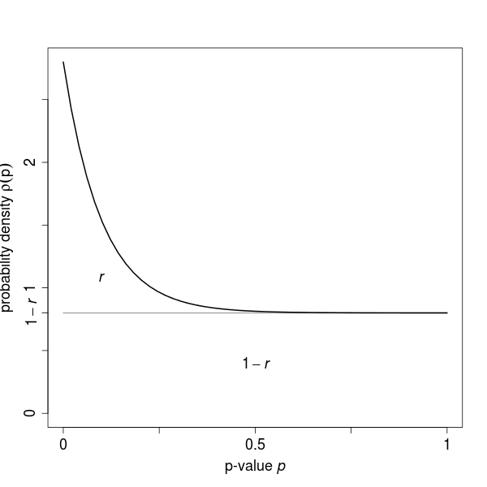
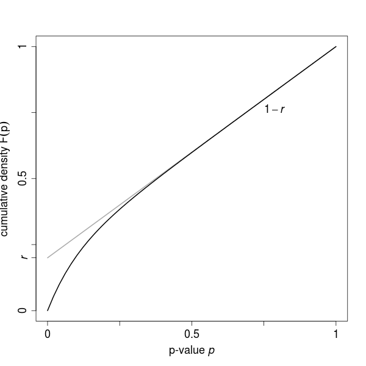
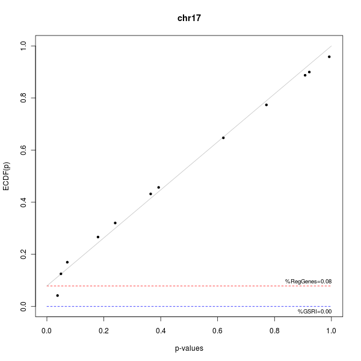
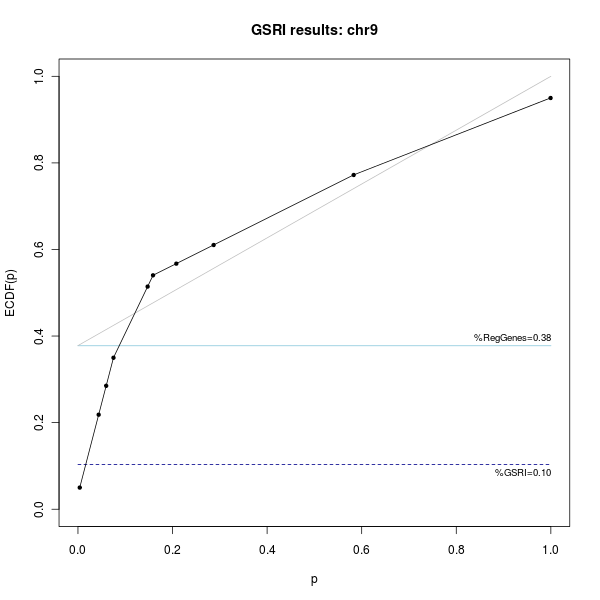

Estimating Regulatory Effects in Gene Sets with the GSRI package
Table of Contents
Introduction
The GSRI package estimates the number of significantly regulated genes in gene sets, assessing their differential effects between groups through statistical testing. The approach is based on the fact that p-values of a statistical test are uniformly distributed under the null hypothesis and shifted towards small values in the case of its violation. The resulting density distribution \(\rho(p)\) of the p-values \(p\) is then given as \[\rho(p)=(1-r)\rho_{0}(p)+r\rho_{A}(p),\] with the fraction \(r\) of significant p-values, the uniform distribution \(\rho_{0}(p)\) of the p-values under the null hypothesis, and the alternative distribution \(\rho_{A}(p)\) of the p-values with a significant effect. In the cumulative density function (CDF) \(F(p)\) this is equivalent to \[F(p)=(1-r)p+r,\] with the uniformly distributed \(\rho_{0}(p)\) translating to a linear CDF with slope \(1-r\) and intercept \(r\). Through iterative fitting of this linear component, \(r\) and thus the number of regulated genes can be estimated. An example for the probability and cumulative density distribution is shown in Figure 1 and Figure 2.

Figure 1: Distribution of p-values in the probability density. The ratio r of significant tests have an unknown distribution shifted towards zero, while the remaining fraction of 1 − r tests exhibits a uniform distribution.

Figure 2: Distribution of p-values in the cumulative density. The PDF translates to a linear CDF with slope 1 − r and intercept r. By fitting the linear component of the CDF, as indicated by the gray line, the ratio of significant tests can be estimated.
The approach applied here does not require a cut-off value for the distinction between regulated and unregulated genes, nor any assumptions about the alternative distribution \(\rho_{A}(p)\) of the p-values. Further, the method is independent of the statistical test used to assess the differential effect of genes in terms of p-values.
Estimates of the method include the number and fraction of regulated genes as well as the Gene Set Regulation Index \(\eta\) (GSRI) for gene set. The GSRI \(\eta\) is the 5% quantile of the distribution of the estimated number of differentially expressed genes obtained from bootstrapping the group samples. It indicates that with a probability of 95% more than \(\eta\) genes in the gene set are differentially expressed. Utilizing the 5% quantile instead of the expectation \(\hat{r}\) introduces a bias, but reduces the variability of the estimates and thereby improves the performance for a ranking of gene sets. The index can also be employed to test the hypothesis whether at least one gene in a gene set is regulated. Further, different gene sets can be compared or ranked according to the estimated amount of regulation. For details of the method, an application to experimental data, and a comparison with related approaches, see Bartholomé et al., 20091.
Data set
In this introduction we use the expression data set provided with the Biobase package. It contains the expression intensities of 26 microarray samples with a subset of 500 probe sets. The phenotypes associated with the samples are stored in the pheno data of the ExpressionSet, including the categorical variables type of disease and sex represented as factors, as well as the continuous score indicating the progress of the disease.
library(Biobase)
data(sample.ExpressionSet)
eset <- sample.ExpressionSet
eset
ExpressionSet (storageMode: lockedEnvironment)
assayData: 500 features, 26 samples
element names: exprs, se.exprs
protocolData: none
phenoData
sampleNames: A B ... Z (26 total)
varLabels: sex type score
varMetadata: labelDescription
featureData: none
experimentData: use 'experimentData(object)'
Annotation: hgu95av2
exprs <- exprs(eset) phenotypes <- pData(phenoData(eset)) summary(phenotypes)
sex type score
Female:11 Case :15 Min. :0.1000
Male :15 Control:11 1st Qu.:0.3275
Median :0.4150
Mean :0.5369
3rd Qu.:0.7650
Max. :0.9800
Please note that we are using this sample data to illustrate general workflows for the analysis of gene sets with the GSRI package. Therefore, the results obtained here should not be interpreted in the context of their biological meaning.
Analysis for a single gene set
Given the expression data we want to find out how many genes show a differential effect with respect to the phenotypic variables, in our case the groups sex and type. In a first step we include all genes in the analysis and focus on the type phenotype.
library(GSRI)
gAllProbes <- gsri(eset, phenotypes$type)
gAllProbes
pRegGenes pRegGenesSd nRegGenes GSRI(5%) nGenes 1 0.1425405 0.1496678 71 0 500
This indicates that around 14% of the genes and thus 71 genes in total seem to be regulated. However, taking the corresponding standard deviation of around 11.5% and the GSRI of 0% at a 5% confidence level into account, we have just an indication for a differential effect.
In the next step we exclude the controls of the Affymetrix microarray since they do not contain relevant information for our analysis. For this we define an object gsAllGenes of the class GeneSet with the subset of genes of interest. Note that in this case we could also use a subset of eset or exprs without an additional GeneSet object. For more details on how to define, import, and manipulate gene sets, please refer to the documentation of the GSEABase package2.
library(GSEABase)
gs <- GeneSet(eset, setName="allGenes") ind <- grep("^AFFX", geneIds(gs), invert=TRUE) gsAllGenes <- gs[ind] gsAllGenes
setName: allGenes geneIds: 31307_at, 31308_at, ..., 31739_at (total: 433) geneIdType: Annotation (hgu95av2) collectionType: ExpressionSet details: use 'details(object)'
gAllGenesType <- gsri(eset, phenotypes$type, gsAllGenes, name="allGenesType") gAllGenesType
pRegGenes pRegGenesSd nRegGenes GSRI(5%) nGenes
allGenesType 0.1626202 0.130124 70 0 433
gAllGenesSex <- gsri(exprs, phenotypes$sex, gsAllGenes, name="allGenesSex") gAllGenesSex
pRegGenes pRegGenesSd nRegGenes GSRI(5%) nGenes
allGenesSex 2.220446e-16 0.1343235 0 0 433
Taking only probes for human genes into acount we explore the effect of the type and sex variable. While the type of disease seems to have a differential effect on the gene expression, the sex of the patient shows no indication to play a role in this example.
The GSEABase package provides methods for importing gene sets from different sources. Here we import a gene set from an .xml file, with genes located on chromosome 17.
gsChr17 <- getBroadSets(system.file("extdata", "c1chr17.xml", package="GSRI")) gsChr17
GeneSetCollection
names: chr17 (1 total)
unique identifiers: 32120_at, 40008_at, ..., 36103_at (526 total)
types in collection:
geneIdType: SymbolIdentifier (1 total)
collectionType: BroadCollection (1 total)
gChr17 <- gsri(eset, phenotypes$type, gsChr17)
gChr17
pRegGenes pRegGenesSd nRegGenes GSRI(5%) nGenes
chr17 0.2398971 0.1477122 2 0.01300221 12
Analysis for multiple gene sets
It is often desirable to perform the GSRI analysis for an experimental data set, comparing several gene sets. This task can be approached with an object of the class GeneSetCollection combining multiple GeneSet objects.
We import five gene sets from a .gmt file and perform the analysis for those with respect to the type variable. Afterwards, we sort the gene sets according to the estimated number and fraction of genes, and export the results as a table to disk. The summary method provides a more detailed overview including the parameters used for the analysis.
gmt <- getGmt(system.file("extdata", "c1c10.gmt", package="GSRI")) gCol5 <- gsri(eset, phenotypes$type, gmt) gCol5
pRegGenes pRegGenesSd nRegGenes GSRI(5%) nGenes
chr2 0.0000000 0.1433104 0 0.00000000 24
chr19q13 0.4010159 0.1807569 4 0.08996428 12
chr6 0.4679782 0.1321866 10 0.23730317 23
chr8 0.1126934 0.1815490 1 0.00000000 12
chr9 0.3778584 0.1732648 3 0.10350416 10
gCol5Sort <- sortGsri(gCol5, c("nRegGenes", "pRegGenes")) summary(gCol5Sort)
* Summary of the GSRI analysis for 5 gene sets:
** Results
pRegGenes pRegGenesSd nRegGenes GSRI(5%) nGenes
chr6 0.4680 0.1322 10 0.2373 23
chr19q13 0.4010 0.1808 4 0.0900 12
chr9 0.3779 0.1733 3 0.1035 10
chr8 0.1127 0.1815 1 0.0000 12
chr2 0.0000 0.1433 0 0.0000 24
** Parameter
nBoot alpha grenander weighting
100 0.05 TRUE FALSE
exportFile <- tempfile()
export(gCol5Sort, exportFile)
Adaption of statistical tests
As pointed out in the introduction, the GSRI approach is independent of the underlying statistical test. By default a t-test is used to assess the differential effect between two groups. With an F-test an arbitrary number of groups can be used for the analysis, while for two groups it is equivalent to the t-test.
As an example we arbitrarily define three groups based on the score variable indicating the progress of the disease. For this analysis we use the F-test rowF provided with this package.
phenotypes$class <- cut(phenotypes$score, seq(0, 1, length.out=4), label=c("low", "medium", "high")) summary(phenotypes$class)
low medium high
7 8 11
g3 <- gsri(eset, phenotypes$class, gsChr17, test=rowF)
g3
pRegGenes pRegGenesSd nRegGenes GSRI(5%) nGenes
chr17 0.07862739 0.1357001 0 0 12
The GSRI approach has several parameters that can be changed in order to adapt the analysis. For illustration we rename the gene set, change the number of bootstraps and confidence level for the GSRI calculation, and use a classical ECDF instead of the modified Grenander estimator for the cumulative density.
g3arg2 <- gsri(eset, phenotypes$class, gsChr17, test=rowF, name="chr17_2", nBoot=50, alpha=0.1, grenander=FALSE) g3arg2
pRegGenes pRegGenesSd nRegGenes GSRI(10%) nGenes
chr17_2 0.1055541 0.1639745 1 0 12
We can also easily implement our own statistical tests for the GSRI analysis. Next, we want to apply an approach taken by the limma package3 which as an increased power for small sample sizes. The canonical structure of the test function has to be called as function(exprs, with exprs the matrix of expression intensities, groups the factor of groups defining the differential contrast, id the indices for the genes part of the current gene set, index the indices for the samples in the bootstrapping, and testArgs the list with optional arguments used by the test function.
library(limma)
limmaTest <- function(exprs, groups, id, index, testArgs) { design <- cbind(offset=1, diff=groups) fit <- lmFit(exprs[ ,index], design) fit <- eBayes(fit) pval <- fit$p.value[id,"diff"] return(pval) }
g3Limma <- gsri(eset, phenotypes$type, gsChr17, test=limmaTest)
g3Limma
pRegGenes pRegGenesSd nRegGenes GSRI(5%) nGenes
chr17 0.2397355 0.1600876 2 0.01037466 12
Visualization
The results of the GSRI analysis can be visualized, showing the empirical cumulative p-values distribution along with the fit of the null distribution \(\rho_{0}(p)\) as well as the estimated fraction \(\hat{r}\) of significant genes and the GSRI \(\eta\) (Figure 3).
plot(g3)

Figure 3: Visualization of GSRI results
The plot method has an advanced system in order to customize the plot in different aspects. This allows us to directly adapt nearly any property of the figure (see Figure 4 for an example). For a detailed description, please refer to the documentation of the plot method.
plot(gCol5, 5, ecdf=list(type="o"), plot=list(xlab="p", main="GSRI results: chr9"), reg=list(col="lightblue", lty=1, lwd=1.5), gsri=list(col="darkblue"))

Figure 4: Visualization of GSRI results with customized parameters
Weighting of genes in gene sets
In contrast to other approaches estimating the degree of regulation, the GSRI package does also allow assign the weighting of each gene in the calculation. Such a step is useful for including additional information in the estimation process, for example the certainty that a gene is part of a gene set.
In the following we use a very simple approach in defining weights for the gene sets based on the Gene Ontology (GO) annotation. For genes with experimental evidence, we assign higher weights than for those without. Please note that the weights used here are defined arbitrarily and more sophisticated approaches can be used in the actual analysis.
library(hgu95av2.db)
gNames <- rownames(exprs(eset)) ind <- Lkeys(hgu95av2GO) %in% gNames evidence <- factor(toTable(hgu95av2GO)[ind,"Evidence"]) summary(evidence)
EXP IC IDA IEA IEP IGI IMP IPI ISS NAS ND RCA TAS 217 37 1193 2985 15 19 228 267 456 297 35 2 1249
l <- lapply(gNames, function(name, names, evidence) evidence[names %in% name], gNames, evidence) expInd <- sapply(l, function(l) any(l %in% "EXP")) goWeight <- rep(0.5, length.out=length(expInd)) goWeight[expInd] <- 1
gCol5go <- gsri(eset, phenotypes$type, weight=goWeight)
gCol5go
pRegGenes pRegGenesSd nRegGenes GSRI(5%) nGenes 1 0.1324852 0.1346451 66 0 500
gCol5go2 <- gsri(eset, phenotypes$type, gmt, weight=goWeight)
gCol5go2
pRegGenes pRegGenesSd nRegGenes GSRI(5%) nGenes
chr2 0.0000000 0.1405094 0 0.0000000 24
chr19q13 0.3557231 0.1717597 4 0.1198489 12
chr6 0.5136737 0.1758591 11 0.2525897 23
chr8 0.1023734 0.1571465 1 0.0000000 12
chr9 0.1753390 0.1850025 1 0.0000000 10
Session info
sessionInfo()
R version 2.13.1 (2011-07-08) Platform: x86_64-pc-linux-gnu (64-bit) locale: [1] LC_CTYPE=en_US.UTF-8 LC_NUMERIC=C [3] LC_TIME=en_US.UTF-8 LC_COLLATE=en_US.UTF-8 [5] LC_MONETARY=C LC_MESSAGES=en_US.UTF-8 [7] LC_PAPER=en_US.UTF-8 LC_NAME=C [9] LC_ADDRESS=C LC_TELEPHONE=C [11] LC_MEASUREMENT=en_US.UTF-8 LC_IDENTIFICATION=C attached base packages: [1] stats graphics grDevices utils datasets methods base other attached packages: [1] limma_3.9.11 hgu95av2.db_2.5.0 org.Hs.eg.db_2.5.0 [4] RSQLite_0.9-4 DBI_0.2-5 GSEABase_1.15.0 [7] graph_1.31.1 annotate_1.31.0 AnnotationDbi_1.15.9 [10] GSRI_2.1.0 fdrtool_1.2.7 Biobase_2.13.7 loaded via a namespace (and not attached): [1] boot_1.3-2 gdata_2.8.2 genefilter_1.35.0 gplots_2.8.0 [5] gtools_2.6.2 les_1.3.0 RColorBrewer_1.0-5 splines_2.13.1 [9] survival_2.36-9 tools_2.13.1 XML_3.4-0 xtable_1.5-6
Footnotes:
1 Bartholomé et al., 2009: Estimation of Gene Induction Enables a Relevance-Based Ranking of Gene Sets
2 Morgan et al.: GSEABase: Gene set enrichment data structures and methods
3 Smyth, 2005: Limma: linear models for microarray data
Date: 2011-07-24 20:57:48 CEST